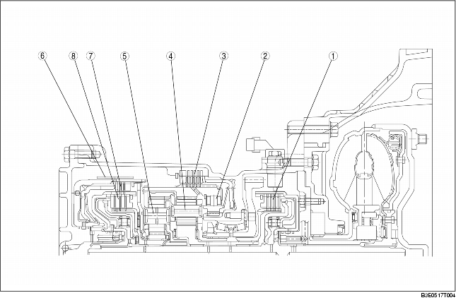

Forward clutch, 3-4 clutch, reverse clutch, low and reverse brake outline • Each multi-disc type clutch and brake has the following function and operates in the gear position(s) as shown in the figure. Component Function Gear position Forward clutch • Transmits input torque from turbine shaft to front sun gear. 1GR, 2GR, 3GR 3-4 clutch • Transmits input torque from turbine shaft to rear planetary carrier. 3GR, 4GR Reverse clutch • Transmits input torque from turbine shaft to rear sun gear. Reverse Low and reverse brake • Fixes rotation of front internal gear or rear planetary carrier. Reverse, 1GR (L range HOLD and M range)  . 1 Forward clutch 2 One-way clutch 3 Low and reverse brake 4 Front planetary gear 5 Rear planetary gear 6 2-4 brake band 7 Reverse clutch 8 3-4 clutch